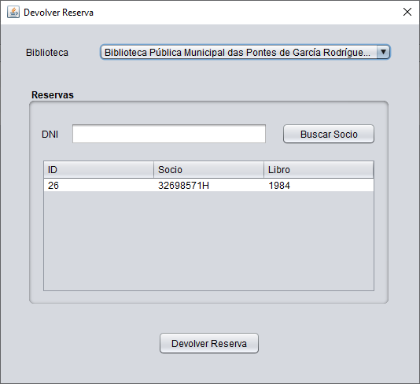

En esta ventana podremos gestionar la devolución de un libro.
Primero seleccionaremos la bibliteca sobre la que queremos trabajar. Ésto cargará todos los socios que pertenecen a esa biblioteca.
Puedes filtrar por el DNI del socio que realizó la reserva o seleccionar directamente la reserva del listado y hacer clic en devolver reserva.